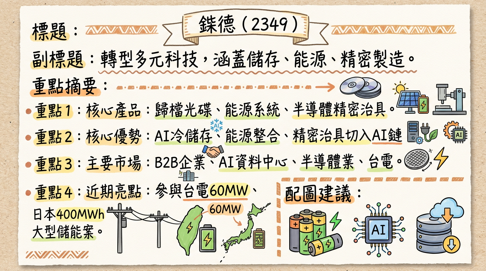
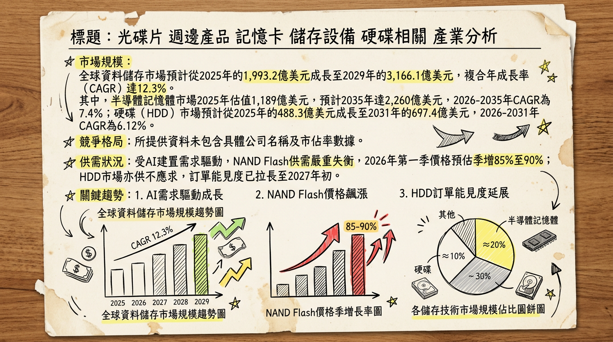
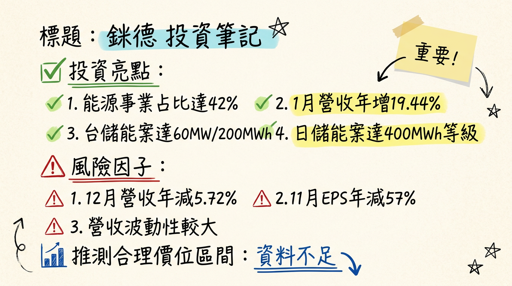

2349 錸德 深度研究報告
今天日期：2026年03月06日
一句話摘要
錸德科技 (2349) 已從傳統光碟製造商成功轉型為多元科技集團，以「能源服務」、「精密製造與先進材料」為兩大成長引擎，積極佈局AI資料中心電力備援、半導體精密治具及大型儲能案場。預計2025年能源事業群營收佔比將翻倍成長至42%，首度超越傳統媒體事業，成為主要營收來源，展現明確的轉型成效。然而，目前本業獲利仍面臨挑戰，投資人需持續關注新事業的獲利貢獻及毛利率改善情況。
公司概覽
錸德科技 (2349) 已成功從傳統光碟製造商轉型，業務橫跨多個高成長領域，產品與服務多元化。
業務與產品線
- 儲存媒體： 包含傳統光學儲存（CD、DVD、藍光）及電子儲存（記憶卡、SSD、可攜式硬碟）。特別是 B2B歸檔光碟 (Archive Disc)，以其低耗能、長壽命、防駭客竄改特性，符合AI時代對冷儲存的需求。
- 能源事業： 提供能源服務與儲能系統解決方案，涵蓋 BESS (電池儲能系統)、UPS (不斷電系統) 模組 及 BBU (電池備援單元)。主要應用於AI資料中心及半導體產線的電力備援方案，並協助削峰填谷。同時也提供太陽能模組和整合式太陽能系統，並參與大型儲能案場建置與維運，例如台灣電力公司60MW/200MWh等級案場及日本400MWh儲能案場。
- 精密製造與先進材料： 運用鍍膜與電鑄技術，延伸至奈米壓印、DLC（類鑽碳鍍膜）、微流道等微結構加工，開發半導體前段製程與封測用精密治具，成功切入AI晶片供應鏈。
- 其他產品： OLED顯示面板、ITO導電玻璃、藍寶石基板解決方案、金屬遮罩以及生物檢測碟片等。
營收結構預估
根據錸德2025年12月法說會預估，其營收結構出現「黃金交叉」。
| 事業群 | 2025年營收佔比 (預估) | 2024年主要產品線貢獻 (預估) |
|---|
| 能源事業群 | 42% (翻倍成長) | - |
| 傳統媒體事業 | 次於能源事業 | - |
| SSD與太陽能產品線 | - | 超過總銷售額的60% |
| 其他 (OLED, ITO等) | - | - |
製造基地
主要生產據點包括台灣新竹湖口（總部及主要生產基地）、大陸昆山、越南。主要的營收地理分佈來自於亞洲地區，其餘來自台灣、美洲、歐洲、非洲、太平洋及其他國家。
核心競爭優勢
能源轉型與AI電力備援的整合能力： 錸德是市場上少數能將BESS、UPS、BBU整合至AI資料中心及半導體製造產線設備電力備援方案的企業，特別是具備承接HVDC（高壓直流）供電架構的能力，此為超大型資料中心未來趨勢。
先進精密製造技術切入AI晶片供應鏈： 運用奈米壓印、DLC（類鑽碳鍍膜）、微流道等微結構加工技術，開發半導體前段製程與封測用精密治具，直接切入AI晶片製造的關鍵環節。
B2B歸檔光碟的冷儲存利基： 在AI時代巨量資料儲存需求下，具備低耗能、長壽命、防駭客竄改特性的歸檔光碟，成為冷儲存市場的獨特解決方案。
資產活化與集團綜效： 透過資產活化每年創造約2億元的穩定現金流。子公司來穎科技成功登錄興櫃，專注高效儲能鋰電池模組，切入半導體大廠及AI資料中心，提升母公司錸德的股權評價與集團整體競爭力。
大型儲能案場建置與維運經驗： 參與台灣60MW/200MWh等級及日本400MWh等級的大型儲能案場，具備案場建置、設備提供與維運的實績，掌握高進入門檻的儲能基礎設施市場。
財務分析
月營收趨勢
| 月份 | 金額 (億元) | 月增率 (MoM) | 年增率 (YoY) |
|---|
| 2026年01月 | 5.57 | 5.23% | 19.44% |
| 2025年12月 | 5.29 | -16.61% | -5.72% |
| 2025年11月 | 6.35 | 41.09% | 28.8% |
| 2025年10月 | 4.50 | -17.24% | -13.54% |
| 2025年09月 | 5.43 | -0.58% | -7.14% |
| 2025年08月 | 5.47 | -33.45% | -7.95% |
錸德2026年1月營收達5.57億元，呈現雙位數年增率與正向月增率，創近2個月新高，顯示新年度開局表現強勁，可能反映能源及AI相關業務的動能。然而，2025年下半年營收波動較大，尤其10月和12月呈現負成長，仍需持續觀察新事業體能否帶來穩定且持續的營收增長。
季度數據 (2025年第三季)
- 每股盈餘 (EPS): -0.12 元 (較2025Q2減少48%，較2024Q3大幅增加1100%)
- 毛利率: 9.86%
- 營業利益率: -4.82%
分析： 2025年第三季EPS雖仍為負值，但虧損幅度較去年同期大幅縮小，顯示營運效率有所改善。然而，毛利率9.86%及營業利益率-4.82%仍偏低，反映公司仍在轉型期的投入階段，新事業的獲利貢獻尚未完全顯現。
全年度營收與 EPS (實際 + 預估)
*
全年 EPS: 0.07 元
*
全年營收: 約 74.98 億元
* 全年 EPS: 由於前三季累計每股虧損-0.34元，預計2025年全年恐難轉盈。
分析： 2024年錸德全年勉強轉正，但2025年前三季累計虧損，全年獲利面臨壓力。預估2025年營收達74.98億元，顯示營收規模仍在。能否在2026年實現新事業的規模化獲利，是評估其投資價值的關鍵。
法說會重點 (2025年12月02日)
錸德集團於2025年12月02日舉行法說會，管理層重點說明如下：
- 營運轉型成功： 強調已成功從傳統光碟媒體轉型，業務重心轉向能源服務、媒體與精密製造、先進材料與生醫三大核心事業。
- 能源事業成為最大營收來源： 預估2025年能源事業群營收佔比將翻倍成長至 42%，正式超越傳統媒體事業，躍居集團最大的營收來源，實現「黃金交叉」。
- 儲能系統佈局：
*
台灣市場： 積極參與台電儲能輔助服務，承接
60MW/200MWh 級以上 大型儲能案場建置。子公司來寶科技正在建置一座
60 MWh 的儲能案場，預計
2026年Q2上線。
* 日本市場： 成功跨足海外，於日本參與 400MWh 等級 的大型儲能案場儲能設備與維運。
- AI資料中心與半導體電力備援： 專注將儲能系統與高階UPS電池模組整合至AI資料中心及半導體製造產線設備的電力備援方案。強調錸德是市場上少數具備承接 HVDC（高壓直流）供電架構 能力的企業之一，可望受惠於超大型資料中心的轉型需求。
- 精密製造與AI晶片供應鏈： 利用奈米壓印、DLC（類鑽碳鍍膜）、微流道等微結構處理技術，開發半導體前段製程與封測所需的精密治具，成功切入AI晶片供應鏈，提供關鍵治具與耗材。
- 歸檔光碟 (Archive Disc)： 因應AI時代巨量資料儲存需求，具備低成本與長期保存特性的歸檔光碟被視為冷儲存市場的重要機會，錸德已具備生產能力。
- 資產活化： 每年創造約 2億元 的穩定現金流，強化財務體質。
- 管理層對下季/下半年指引： 法說會內容強調集團將持續以能源服務、精密製造與先進材料三大引擎，搭配資產活化策略，提升營運規模與獲利能力，但未提供具體的產能利用率、資本支出金額以及明確的下季/下半年營收或獲利指引。
券商觀點
目前搜尋結果中未找到至少3家券商對錸德 (2349) 的具體目標價、2025-2026年EPS預估數字，以及最近有無重大調升/調降評等的詳細券商報告資訊。
| 券商名稱 | 目標價 (TWD) | 評等 | 日期 |
|---|
| 目前無相關資料 | - | - | - |
財報深度分析
利潤率趨勢
| 季度 | 毛利率 | 營業利益率 | 稅後淨利率 |
|---|
| 2025年Q3 | 9.86% | -4.82% | -1.06% |
| 2025年Q2 | 14.57% | 0.16% | -5.54% |
| 2025年Q1 | 13.42% | 0.33% | -1.05% |
| 2024年Q4 | 20.82% | 1.52% | 0.76% |
| 2024年Q3 | 15.78% | -5.52% | 3.61% |
| 2024年Q2 | 18.30% | -2.11% | 2.40% |
| 2024年Q1 | 17.19% | -3.16% | 4.35% |
錸德的毛利率在2024年Q4達到20.82%的近期高峰後，在2025年呈現下滑趨勢，尤其2025年Q3降至9.86%。營業利益率和稅後淨利率在2025年多數季度為負值，顯示本業獲利仍面臨挑戰。法說會內容指出，2025年Q2毛利率略有下滑部分原因為匯率波動及美國關稅影響。公司正積極轉型至能源事業和AI相關應用，這些新事業的產品組合和規模效應將是未來改善利潤率的關鍵。
存貨與營運週轉
| 季度 | 存貨金額 (千元) | 存貨週轉天數 (天) | 應收帳款週轉天數 (天) |
|---|
| 2025年Q3 | 1,384,252 | 87.25 | 78.41 |
| 2025年Q2 | 1,946,868 | 81.84 | 56.18 |
| 2025年Q1 | 1,601,046 | 98.39 | 72.86 |
| 2024年Q4 | 1,582,263 | 107.18 | 69.09 |
| 2024年Q3 | 1,525,090 | 89.79 | 64.65 |
存貨金額在2025年Q2達到高峰後，於Q3有所下降。存貨週轉天數在2024年Q4達到近期高點107.18天，隨後在2025年Q2下降至81.84天，Q3略有回升。應收帳款週轉天數則在2025年Q2顯著下降至56.18天，營運效率有所提升，但Q3再度拉長。整體來看，存貨週轉天數波動，但未見明顯異常堆積或備料現象，應持續觀察公司新事業體發展對營運週轉的影響。
資本支出與自由現金流量
- 資本支出： 近期缺乏2025-2026年具體資本支出金額。然而，2025年第一、二、三季的自由現金流量多為負值，其中2025Q1為-931,343千元，2025Q3為-566,943千元，這可能反映公司在能源儲能案場建置及精密製造設備等轉型業務上的持續投入。
- 未來資本支出計畫： 公司積極參與台電及日本大型儲能案場建置，暗示未來在能源儲能領域將有持續的資本投入和產能擴充，例如子公司來寶科技的60 MWh儲能案場預計2026年Q2上線。
股權異動
- 董監事/大股東申報轉讓紀錄： 未找到2025-2026年的董監事/大股東申報轉讓紀錄。
- 庫藏股買回紀錄： 未找到2024-2026年的庫藏股買回紀錄。最近一次找到的庫藏股買回決議是在2012年，已完成註銷。
- 可轉換公司債 (CB) 發行： 未找到2024-2026年發行可轉換公司債的相關資訊。
- 現金增資或減資計畫： 未找到2024-2026年現金增資或減資計畫的相關資訊。
- 股利政策： 根據Goodinfo!台灣股市資訊網資料顯示，錸德自2010年至2025年股利皆為0元，未發放現金股利或股票股利。
產業分析
市場規模與成長趨勢
儲存媒體產業
- 全球市場規模： 預計將從2025年的1,993.2億美元成長至2029年的3,166.1億美元，複合年成長率（CAGR）達12.3%。
- 半導體記憶體： 預計2035年達2,260億美元，2026-2035年CAGR預估7.4%。2025年市場估值1,189億美元。
- 硬碟（HDD）： 預計從2025年的488.3億美元成長到2031年的697.4億美元，2026-2031年CAGR為6.12%。
- 供需狀況： 2025年Q4全球NAND Flash營收季增23.8%，達211.7億美元。預估2026年Q1 NAND Flash價格季增85%至90%。HDD市場亦因AI資料中心需求而供不應求，訂單能見度至2027年初。
能源事業 (儲能系統)
* 整體能源儲存系統預計從2025年的
2,668.4億美元成長到2026年的
2,878.3億美元，年複合成長率達
7.9%。
* 電池能源儲存系統（BESS）市場預計從2025年的85.9億美元成長到2026年的106.4億美元，CAGR達23.9%。預計到2030年達248.4億美元，CAGR為23.6%。
- 供需狀況： 2025年全球儲能市場需求強勁，預計2026年市場增速有望接近50%。AIDC（AI資料中心）配套儲能系統將迎來規模化部署高峰期。
精密製造與先進材料
- 全球市場規模： 精密機械加工市場2025年為1,154.1億美元，預計到2035年將達2,445.9億美元，2025-2035年CAGR為7.8%。
- 供需狀況： AI需求帶動高階CCL板材市場緊俏，關鍵化學配方「高階樹脂」全球僅少數廠商能穩定供貨。
- 產業平均毛利率水準： 半導體設備零部件及表面處理領域，技術密集型企業的綜合毛利率在2025年前6個月可達48.47%，其中半導體產品毛利率保持在50%以上。
競爭格局
全球NAND Flash主要競爭者 (2025年第四季)
| 排名 | 公司名稱 | 營收 (億美元) | 季增率 | 市佔率 |
|---|
| 1 | Samsung | 66 | 10% | 28% |
| 2 | SK Group | 52.1 | 47.8% | 22.1% |
| 3 | Kioxia | 33.1 | 16.5% | - |
| 4 | Micron | 30.3 | 24.8% | - |
| 5 | SanDisk | 30.3 | 31.1% | - |
錸德在儲存媒體方面主要聚焦於B2B歸檔光碟及SSD產品，與上述NAND Flash巨頭在供應鏈上游有所不同，但SSD產品線則與其競爭。
錸德 vs 主要競爭對手比較
由於錸德業務多元且市場分散，以下針對各主要業務進行定性比較。
| 業務類別 | 錸德優勢 | 主要競爭對手及特性 |
|---|
| B2B歸檔光碟 | 低耗能、長壽命、防駭客竄改，符合AI冷儲存需求 | 磁帶 (LTO): 容量大，成本低；玻璃/全像/DNA儲存: 新興技術 |
| 儲能系統 | 具備HVDC供電架構能力，整合AI資料中心及半導體產線電力備援，參與大型案場建置與維運 (台電60MW/200MWh，日本400MWh) | Tesla, Fluence, LG Energy Solution, Hitachi Energy, Sungrow: 全球領導廠商，規模及技術廣泛 |
| 精密製造 | 奈米壓印、DLC鍍膜、微流道等微結構加工，切入AI晶片供應鏈精密治具 | 國精化 (4722): 高階5G/AI用樹脂；臻寶科技(未上市): 半導體設備零部件高毛利；崴寶精密 (7744-TW): 半導體/AI/雲端精密零件 |
台灣同業比較 (營收規模、毛利率、EPS 對比 - 參考資料)
由於錸德業務多元，且缺乏針對2025-2026年台灣各同業的完整且統一的營收、毛利率、EPS最新資料，以下提供相關產業的參考數據：
| 公司名稱 (代號) | 主要業務 | 2025年前三季營收 (億元) | 2025年前三季毛利率 | 2025年前三季EPS |
|---|
| 錸德 (2349) | 儲存媒體、能源、精密製造 | - | 9.86% (Q3) | -0.34 |
| 崴寶精密 (7744) | 半導體/AI精密零件 | 17.28 | 39.37% | 12.91 |
| 國精化 (4722) | 特用樹脂 (AI伺服器CCL) | - | - | - |
| 臻寶科技 (未上市) | 半導體設備零部件 | - | 48.47% (H1) | - |
相較於在特定高階半導體精密製造領域的同業，錸德目前的毛利率和獲利能力仍有顯著提升空間。這反映了其業務轉型仍在初期，新事業的規模經濟和高附加價值尚未完全發揮。
產業趨勢
AI應用對儲存需求的爆發性成長：
* 影響： AI對資料傳輸速度與儲存空間的需求龐大，推動企業級SSD和HDD需求爆發，導致NAND Flash和HDD價格飆漲。同時，AI大數據的長期保存需求也驅動了對「冷儲存」的需求。
* 對錸德的機會： B2B歸檔光碟因其低耗能、長壽命特性，符合AI時代對冷儲存的需求。SSD產品線亦受惠於整體儲存需求成長。
* 對錸德的威脅： 傳統光碟市場持續萎縮，電子儲存媒體市場競爭激烈，NAND Flash和HDD巨頭擁有規模和技術優勢。
能源轉型與儲能系統的需求激增：
* 影響： 全球對可再生能源需求增長，儲能系統在平衡電力供需、穩定電網和支援AI資料中心電力備援方面變得不可或缺。
* 對錸德的機會： 錸德的能源服務與儲能系統解決方案（BESS、UPS、BBU）在AI資料中心和半導體產線電力備援市場有廣闊空間，參與大型儲能案場建置也帶來穩定收入。HVDC供電架構能力是其獨特優勢。
* 對錸德的威脅： 儲能系統產業面臨全球供應鏈重組挑戰，技術快速迭代，競爭激烈。
精密製造與先進材料在半導體及高階應用中的關鍵地位：
* 影響： AI伺服器、半導體等高階應用對精密製造與先進材料需求日益增加，尤其在關鍵化學配方（如高階樹脂）和半導體設備零部件。
* 對錸德的機會： 運用其在鍍膜、電鑄、奈米壓印等技術優勢，可切入AI、半導體等高階應用所需的關鍵零組件和材料市場，特別是半導體前段製程與封測用精密治具。
* 對錸德的威脅： 高階精密製造技術門檻高，研發投入大，市場集中於少數領先廠商。
相關投資題材連結
*
AI資料中心電力備援： 錸德的BESS、UPS、BBU模組及HVDC供電架構能力，直接為AI資料中心提供穩定電力，確保AI算力不中斷。
* AI資料中心冷儲存： B2B歸檔光碟作為長壽命、低耗能的冷儲存方案，符合AI大數據的長期保存需求。
* AI晶片精密治具： 精密製造技術切入AI晶片供應鏈，提供半導體前段製程與封測用關鍵治具。
- HBM (高頻寬記憶體)： 雖無直接連結，但若錸德的精密製造技術能應用於HBM相關的封裝、檢測設備材料或散熱方案，則可間接受益於HBM市場的成長。
- 電動車： 錸德的儲能系統經驗可能延伸至電動車充電基礎設施或車用電池相關的儲能解決方案。精密製造技術亦可能應用於電動車關鍵零組件製造。
近期催化劑
利多事件
- 2026年1月營收表現亮眼： 合併營收達5.57億元，月增5.23%，年增19.44%，呈現雙成長，創近2個月新高，顯示新事業動能逐步顯現。
- 子公司來穎科技成功登錄興櫃 (2026年1月15日)： 來穎科技專攻高效儲能鋰電池模組，切入半導體大廠及AI資料中心儲能櫃市場，提升集團在能源領域的市場地位及母公司錸德的股權評價。
- 2025年法說會明確轉型方向與成果 (2025年12月02日)：
* 預估2025年能源事業群營收佔比將翻倍成長至
42%，成為最大營收來源。
* 明確指出在AI資料中心HVDC供電架構、半導體精密治具、大型儲能案場（台電60MW/200MWh、日本400MWh）的具體佈局與進展。
- 子公司來寶科技儲能案場上線 (預計2026年Q2)： 正在建置的60 MWh儲能案場上線將為能源事業貢獻新的營收和獲利。
利空事件
- 獲利穩定性仍待提升： 2025年第三季EPS為-0.12元，毛利率9.86%，營業利益率-4.82%，顯示新事業雖有營收貢獻，但整體獲利能力仍未穩定轉正。2025年全年預計仍將虧損。
- 2025年12月營收下滑： 合併營收5.29億元，月減16.61%，年減5.72%，反映營收波動性。
- 三大法人近三個月累計賣超： 2025年12月至2026年3月4日，三大法人合計買賣超為-10,398張，尤其外資累計賣超-10,388張，籌碼面壓力較大。
- 重要子公司博錸科技董事長辭任 (2026年1月20日)： 儘管對整體營運影響待觀察，但高層異動仍可能帶來不確定性。
⭐ 成長動能時間軸
| 時間點 | 成長動能 | 具體內容 |
|---|
| 2025年 | 能源事業群營收佔比翻倍成長 | 預估佔比達42%，超越傳統媒體事業，成為主要營收來源。 |
| 切入AI晶片供應鏈 | 運用精密製造技術，開發半導體前段製程與封測用精密治具。 |
| 積極爭取國際級AI客戶 | 將儲能系統與高階UPS電池模組整合至AI資料中心電力備援方案。 |
| 跨足日本大型儲能市場 | 參與400MWh等級的大型儲能案場儲能設備與維運。 |
| 歸檔光碟持續推動B2B市場 | 符合AI時代冷儲存需求。 |
| 子公司來穎科技專精AI電源需求 | 積極佈局半導體廠UPS電池與大型儲能櫃。 |
| 2026年1月 | 來穎科技成功登錄興櫃 | 提升集團評價與市場關注度。 |
| 2026年Q2 | 來寶科技60 MWh儲能案場上線 | 新增儲能案場產能與營收貢獻。 |
| 持續動能 | AI運算需求爆發 | 帶動資料中心對電力穩定性與HVDC架構的需求，BBU成為AI伺服器標配。 |
| AI數據冷儲存需求增長 | AI生成海量數據，對長期保存且低成本的冷儲存需求日益增加。 |
| 全球能源轉型加速 | 儲能市場爆發性成長，提供錸德在再生能源領域的機會。 |
2026 展望
成長動能：
2026年錸德主要成長動能將來自能源事業群的持續擴張與AI相關應用。子公司來寶科技的60 MWh儲能案場預計Q2上線，將直接貢獻營收。AI資料中心對HVDC供電架構的需求激增，以及對BESS/UPS/BBU整合方案的依賴，將是錸德能源事業的重要成長契機。此外，在半導體精密製造領域，隨著AI晶片出貨量增加，對其提供的精密治具和耗材需求也將同步提升。B2B歸檔光碟在冷儲存市場的佈局也將繼續受惠於AI時代數據量的爆發。有報導指出，在AI與雲端技術推動下，預計2026年EPS有望持續成長5%，但需基於獲利轉正基礎。
風險：
儘管成長動能強勁，錸德仍面臨多重風險。首先，新事業的獲利穩定性仍是最大考驗，2026年Q1 EPS為-0.28元，顯示轉型期仍有虧損壓力。第二，能源及AI相關產業競爭激烈，技術迭代快速，存在被競爭對手超越的風險。第三，全球經濟情勢、地緣政治、供應鏈重組（如美國FEOC規範對儲能產業的影響）及匯率波動，都可能對公司營運造成不利影響。此外，近期三大法人籌碼面賣超，可能對股價形成壓力。
投資結論
錸德科技正處於一個關鍵的轉型期，其戰略性地從傳統光碟製造轉向高成長的能源服務與AI相關精密製造，展現了明確的企業再造決心。
轉型成效初步顯現，但獲利仍待驗證： 能源事業群在2025年營收佔比預計達42%，超越傳統媒體，這是一個重要的里程碑。公司在AI資料中心電力備援（HVDC）、半導體精密治具、大型儲能案場等領域的佈局具前瞻性。然而，2025年多數季度仍處於虧損狀態，2026年Q1 EPS為-0.28元，顯示新事業貢獻獲利的能力仍在發展中，是投資人需密切關注的核心指標。
擁抱AI與能源轉型兩大趨勢： 錸德的產品與服務直接受惠於AI運算與全球能源轉型兩大長期趨勢。AI對資料中心電力穩定性、冷儲存以及高階半導體材料的龐大需求，為錸德創造了顯著的市場機會。其在HVDC供電架構和BESS/UPS整合方案的獨特能力，使其在AI基礎設施建置中佔據有利位置。
子公司興櫃與儲能案場上線提供具體成長動能： 孫公司來穎科技登錄興櫃，以及子公司來寶科技60 MWh儲能案場預計2026年Q2上線，是可量化的近期催化劑，有望進一步提升集團的評價並增加營收貢獻。
資產活化與集團綜效強化財務體質： 每年2億元的穩定現金流有助於公司在轉型期的財務彈性。集團內部透過子公司專業化分工，提升了整體競爭力。
投資建議：持續觀察，設定獲利轉正為關鍵指標。 考量錸德在高速成長產業的潛力佈局，以及目前仍處於轉型期虧損階段，建議投資人應保持持續觀察，將「新事業獲利穩定性」與「毛利率改善趨勢」作為投資決策的關鍵指標。 若公司能展現營收規模擴大的同時，伴隨著毛利率與營業利益率的顯著提升，並實現季度性獲利轉正，則其具備顯著的價值重估潛力。在獲利模式尚未清晰前，貿然給出具體目標價區間具有高度不確定性。基於其在AI與能源轉型趨勢中的戰略地位，若能成功轉虧為盈並實現市場預期的2026年EPS增長，公司股價可望獲得重估。 建議投資人密切追蹤後續季度財報與管理層對獲利能力的最新指引。
本報告由 AI 自動產生，資料來源為公開網路資訊，僅供參考，不構成投資建議。產生時間：2026-03-06 09:35
📊 資訊卡


